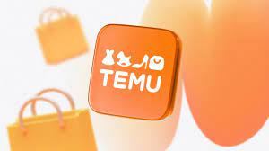

Fech de publicacion: 26 marzo 2024
Al ingresar temu, una cascada de productos de todo tipo empieza a llenar de pantalla. y casi todo esta acompañado de etiquetas de descuento y reseñas positivas. para quieres buscan comprar barato en emdio de la alta inflacion que dejo la pandemia, parece ser la plataforma ideal. Y basta de hacer algunas comparaciones con sitio similares como amazon o mercado libre para estar tentado a comprar en temu. Es un "amazon con esteroides", le die a la BBC el experto en comercio Niel Saunders. su valor actual se situa justo por debajo de los US$150.000 millones.
Productos sin marca al mirar la lista de productos que se venden en temu, los compradores observaran que la mayoria son articulos que no tienen estampado el logotipo de una marca, o si la tienen, no de alguna que sea muy conocida y eso no es casualidad, pues esta plataforma china esta empleando una estrategia de venta directa de la fabrica de manufactura al consumidor. Otras plataformas, en cambio ofrecen marcas de renombre (aunque muchas tengan como origen esa misma fabrica de asia). " En temu entienden que los consumidores, en estos tiempos de inflacion y economia turbulenta, buscan comprar productosbaratos", explica el analista nell saunders.
"Y la plataform esta permitiendoa las empresas vender sus productos a una deima partede los precios normales para acceder directamente a los consumidores de todo el mundo", agrega. "Los consumidores que quieren comprar un camiseta cara, muy a menudo tienen que pagar una prima del 50% si tiene su logotipo en ella". pero los expetos advierten que, logicamente, los productos de temu no son de mejor clidad ni durabilidad, a pesar de las buenas reseñas que pueden aparecer en la plataforma.
Ventas sin intermediarios, Otro factor que suele encarecer los productos elaborados en las fabricas de Asia es la venta a traves de tiendas miniristas. pero con el comercio en linea, los fabricantes pueden prescindir de los costos adicionales que implica la venta en tiendas fisicas o en plataformas ya establecidas en occidente. "No tienen que vendera traves de walmart, mars and spencer (reino unido) o amazon. pueden ir directamente al consumidor, directamente de las fabricas, y por eso pueden tener precios tan baratos", señala rein.